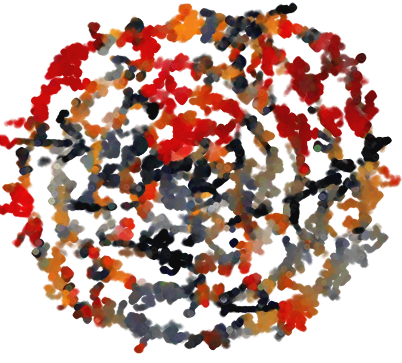

PathPainter

PathPainter is tool for creating generative art.
This program finds the "path of least resistance" through the pixels of a photo in order to create an interesting painterly effect. Using the Processing file, you can play with several parameters, including the input image, stroke lifespan, opacity, and stroke width.